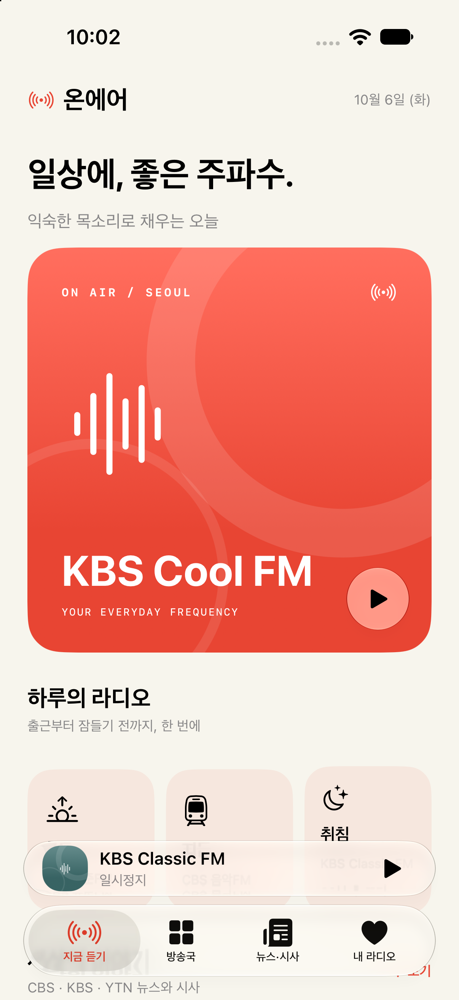
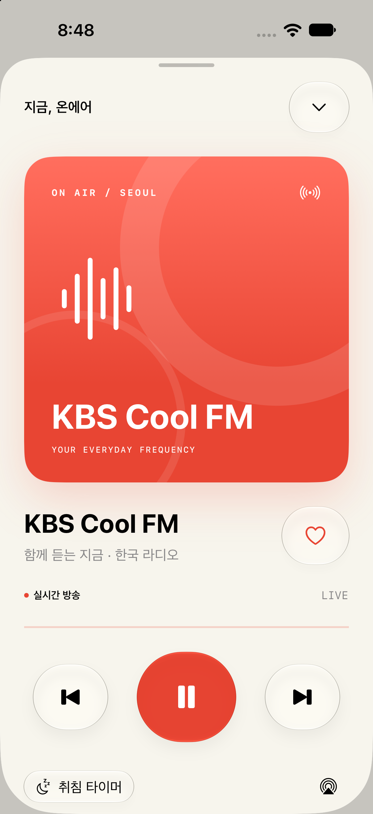
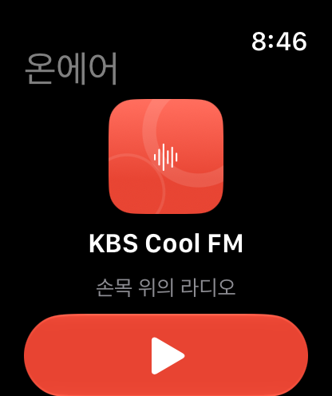
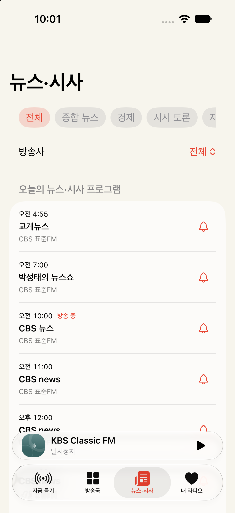
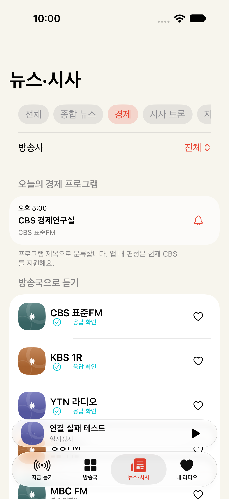
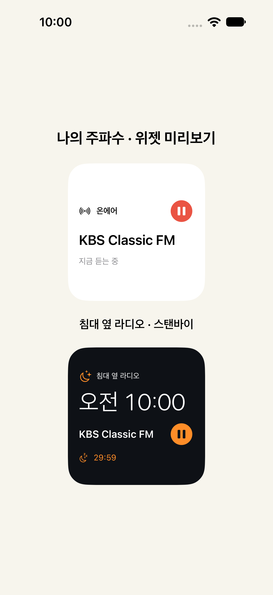
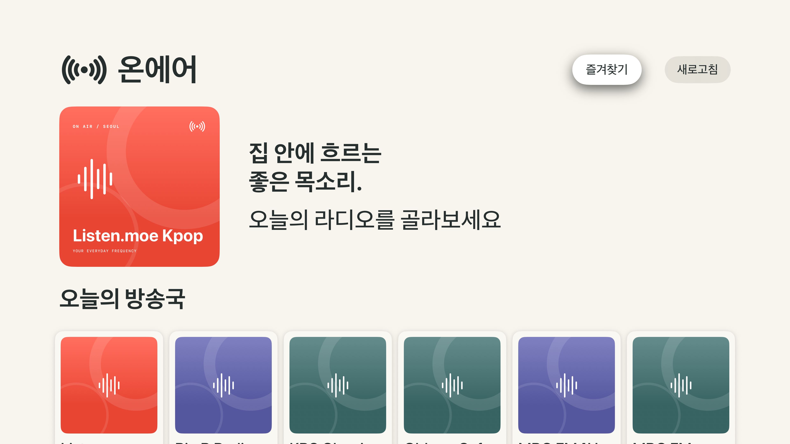

ON AIR / EVERYDAY FREQUENCY일상에, 좋은 주파수.
온에어 — 한국 라디오를 iPhone, Apple Watch, Apple TV에서.
아래 이미지는 실제 27 OS 시뮬레이터에서 실행한 앱 화면입니다.
Liquid GlassWidgetKit · StandByLive ActivitySiri · AirPlay
iPhone · 오늘의 방송국
iPhone · 지금, 온에어
Watch · 손목 위의 라디오
뉴스·시사 · 오늘의 프로그램
경제 · CBS 공식 편성
재생·야간 위젯 · 앱 내 표시부 미리보기
Apple TV · 집 안에 흐르는 좋은 목소리